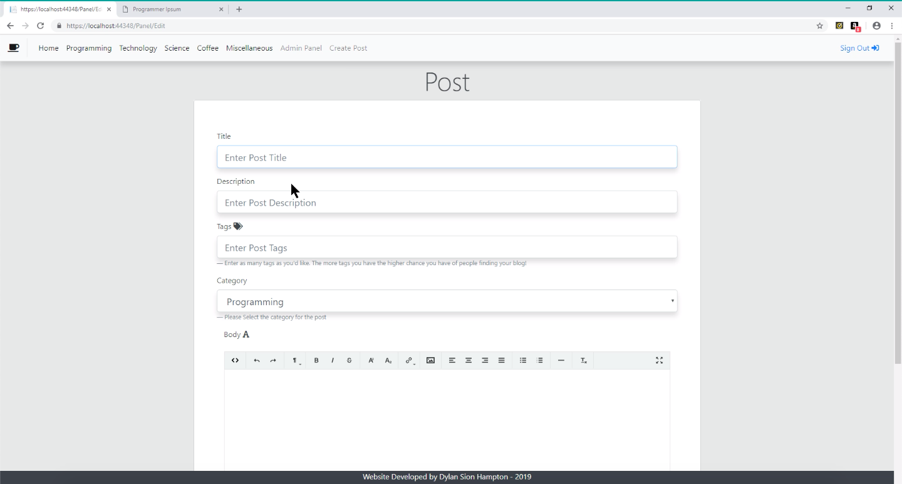
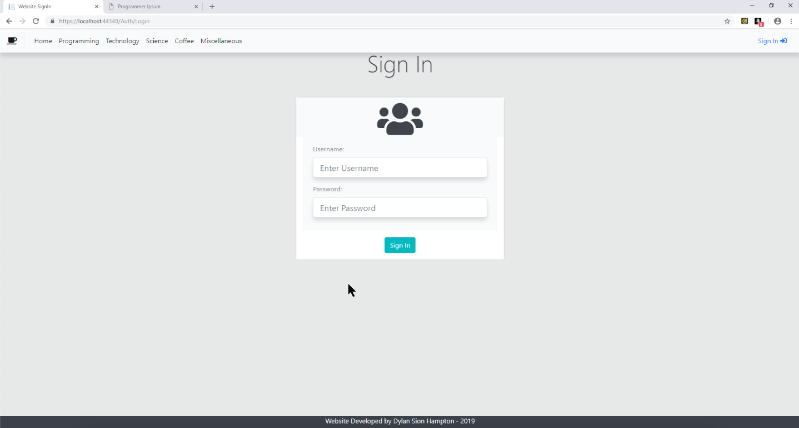
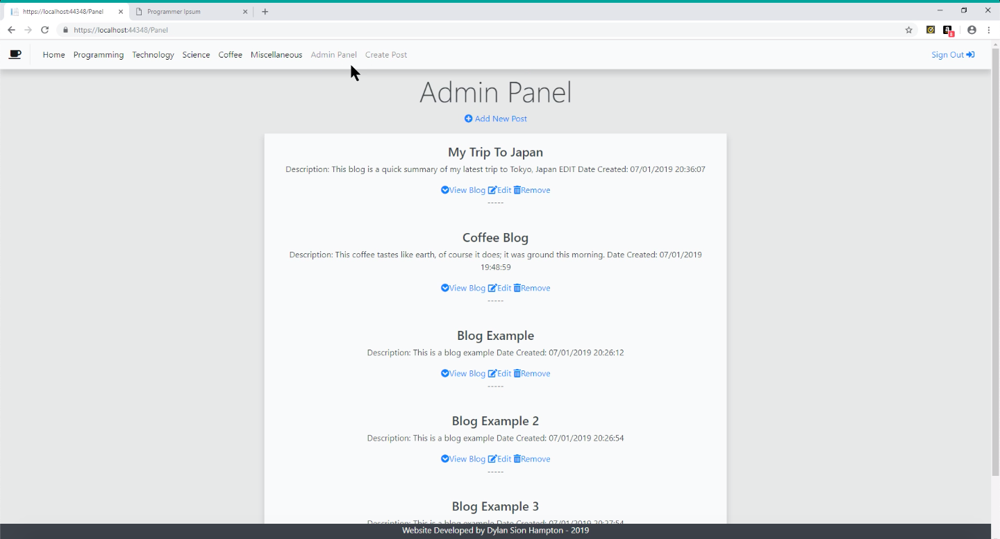

Web App Development Project
This page details and displays my submission for the assignment. The aim of the assignment was to create a web application, using ASP.NET Core MVC6.
I gained a mark of 87% for my assignment.
According to the assignement specification the website must have the following functionalities: The web application admin, who are the clients, can create posts and their users, who are your client’s customers, can comment on those posts.
This system was implemented in ASP.NET Core MVC6, which I used in Visual Studio. This was a great introduction to web development, I primarily used C# to program the backend of the website and to allow database migrations, which made handling the databases a lot easier and quicker.
For this assignment I started with the backend. Trying to get the system to allow blog posts to be created, read, updated and deleted as this is the main reason for the blog website. This was done by utilising a SQL database along with using a repository class and interface in C#. This worked perfectly, users could add a new post to the system, view that added post and had the option to update or delete it. When I was happy with the system I styled it ,using Bootstrap. The create and update post webpage looks like this:  The admin is able to add a Title and Description to the post that is displayed on the homepage. The website also allows the Admin to add a category to the post so that customers can filter through cateogories on the homepage. I used a text editor that is created in java script for the Admin to add a body of text to the post. They can use HTML markup to style the text. The Admin is also able to add an image to the post. While developing the website I came across Search Engine Optimisation (SEO) I thought that this would be a good element to add to this particular website as it would allow the Admin to extend their reach and have a louder presence on the internet. To do this I added the function to add tags to posts. These tags are used as meta tags to be found by search algorithms to give the Admin's blog a higher chance of being found by customers.
Once the database was up and running I wanted to make sure that only the website Admin could access the database for the blog posts. I had to make sure that the database was safe, and could not be changed by anyone who wasn’t the Admin. For this I added Authorisation to the website. I used a claims based system that relied on roles in the system. Users of the website would have to sign in to the site to access certain features. 
Anyone can view the site, but to engage with the website the user has to be a registered customer or Admin and sign in with the appropriate credentials. When the users signs in they are assigned a role either ‘User’ or ‘Admin’ and these roles determine what they can access in the system. Only admin accounts can access the admin page, where they can view all posts, create, edit and delete posts. Users can add comments to posts, If the user does not have a role they can only view certain pages. 
I am very proud with this website, as it is the first full stack website I have ever developed. The assignment taught me about the importance of Databases and how they’re used in business. I enjoyed working on the backend, but loved working on the front end. I spent hours designing and styling the website, working a lot with icons and bootstrap to make the website as professional and as marketable as possible.